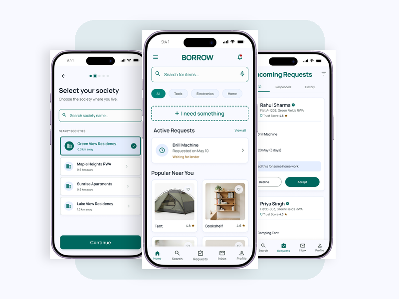
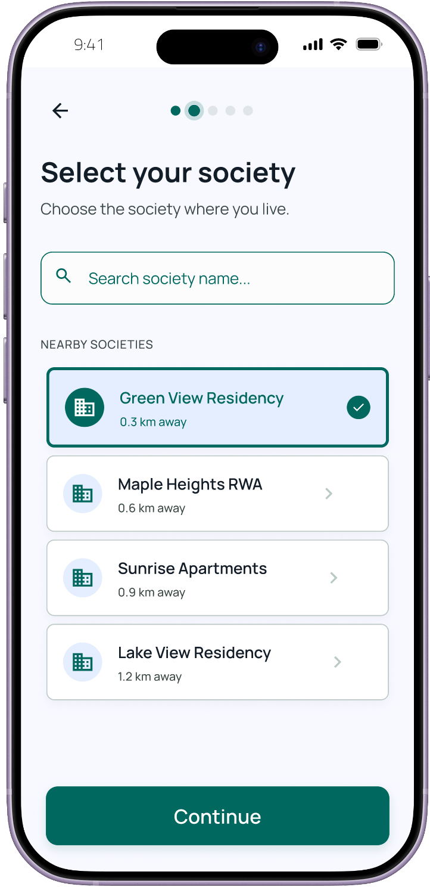
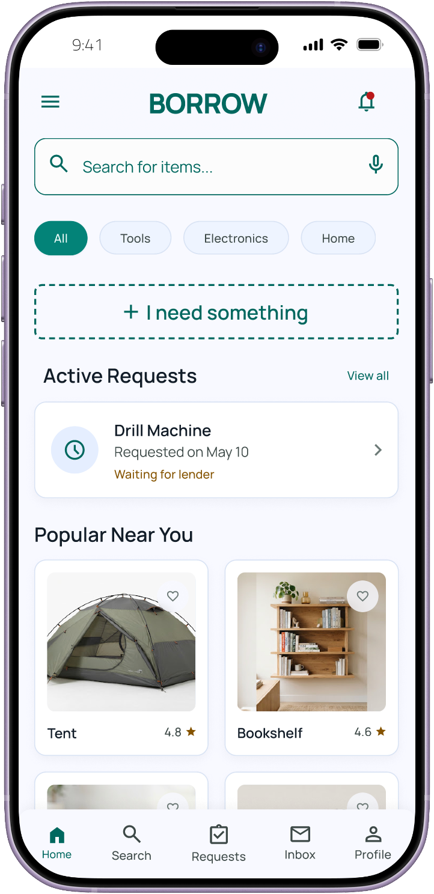
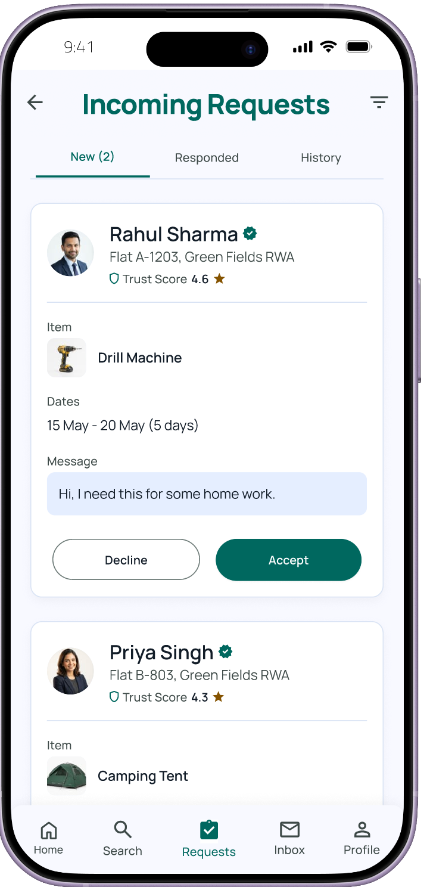
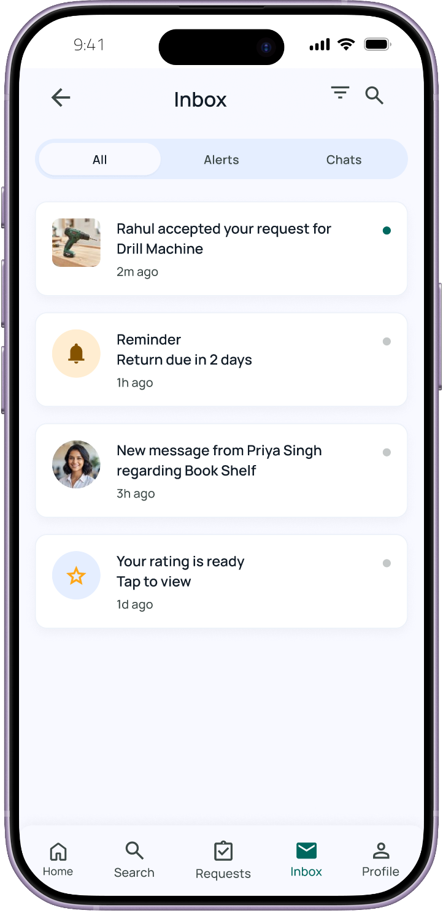
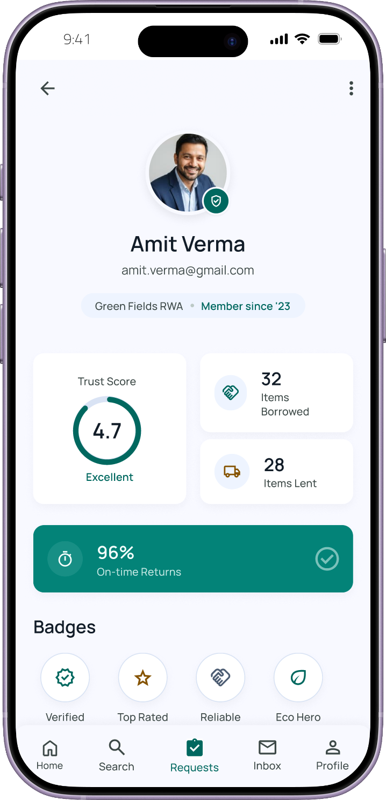
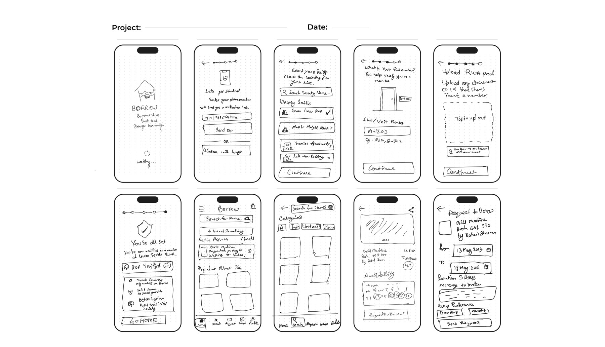

A neighborhood item-lending mobile app for verified housing-society residents, replacing social friction and awkward favors with structured, trust-scored borrowing.

Borrow is aimed at urban and suburban residents aged roughly 22–45 living in apartment complexes, gated communities, and housing societies — young professionals, students, and small families who own tools, appliances, or equipment they rarely use, alongside neighbors who occasionally need those exact items for short-term, one-off tasks.
Today that need is met informally. Residents ask around in person (which only works if they already know a neighbor well), or post in a chaotic society WhatsApp group, which is unstructured, hard to search, and has zero accountability — no return dates, no ratings, and no record of who holds what. The alternatives are worse: buying something you will use once, or renting from a distant commercial store that is neither free nor hyperlocal.
Project constraints: A solo, five-week project with no budget and no dedicated corporate research pool. My reach was my own network and their residential societies, which is why the study leans on a single 28-response survey rather than a multi-thousand sample — a boundary I treat with full transparency.
Neighbors need each other's occasionally-used items, but have no trustworthy way to discover and borrow them — so they default to buying, renting, or going without.
The most common response to needing an unowned item was to buy it immediately or manage without it. Borrowing was rarely the first instinct, even though most respondents acknowledged having done it before. And when asked what would make an app trustworthy enough to lend through, verified identity tied to a real flat number ranked well above any monetary incentive — proving that the primary blocker is social trust and interpersonal friction, not financial return.
I ran a structured survey (built and distributed via Google Forms, analyzed in Google Sheets) across four core sections: demographics, current borrowing behavior, pain points, and expectations for a dedicated lending app. I collected 28 responses from residents across several gated societies and paired this with a competitor scan of Peerby, StuffLender, Fat Llama, Nextdoor, Facebook Marketplace, and informal WhatsApp groups.
What surprised me: People weren't primarily afraid of being cheated or having an item broken; they were afraid of the social discomfort of requesting a favor. That single revelation reframed everything downstream.
Borrow isn't primarily a trust-verification product — it is a product that removes the need to directly ask a person for a favor. That single insight drove two major information-architecture decisions:
1. Single-Society Scope: Users search for and confirm their specific society during onboarding. Everything downstream — browsing, item location, the trust score — is expressed in society terms ("Tower B, Flat 402") instead of abstract kilometers.
2. Asynchronous In-App Exchange: The entire lifecycle is mediated by the app so nobody has to cold-call, text, or knock on an unfamiliar door:
Browse items → Send structured request → Lender reviews → Schedule pickup → Return → Reciprocal rating
I mapped this sequence as a flowchart before wireframing, then translated six distinct user personas (from the Pragmatic Borrower to the Social Avoider) into user stories that prioritized the MVP backlog.
The visual system employs a deep, calming teal green (signaling trust, safety, and community growth) against a clean surface background, soft rounded cards, pill category chips, and a persistent 5-item bottom tab bar (Home, Search, Requests, Inbox, Profile). Every list surfaces the counterpart's trust score and verified flat number up front.
Typography & Elevation: Set in Manrope throughout (SemiBold 600 for headers/buttons, Medium 500 for navigation and meta labels). Elevation uses soft, low-contrast shadows: 0 4px 6px rgba(0,104,95,0.15) under primary action buttons and 0 4px 6px rgba(0,0,0,0.04) under content cards.

Residents search for and confirm their specific gated community or RWA society. Flat number registration and document proof establish verified trust right at the front gate.

A clean feed of popular items available inside the resident's society with category chips (Tools, Electronics, Home). The prominent "+ I need something" button enables quick borrowing requests without asking anyone directly.

Lenders inspect incoming requests with the borrower's verified name, flat number (Flat A-1203), society badge, and Trust Score (4.6★) front and center. One-tap Decline or Accept keeps decisions frictionless.

Segmented tabs (All / Alerts / Chats) keep active borrow handoffs, automated return countdown reminders ("Return due in 2 days"), and ratings organized in one central place.

A dedicated user profile showcasing overall Trust Score (4.7★), on-time return rate (96%), items borrowed vs items lent, and verified community badges (Top Lender, Quick Returner).
The onboarding, browse, and request-creation sequences were paper-sketched in full before touching Figma. This allowed the navigation hierarchy and request state machine to be pressure-tested cheaply before committing to visual styling.

This project's validation is pre-design rather than post-design, and I want to be honest about that gap rather than dress it up. With a solo, five-week timeline, I didn't run moderated usability tests on the final screens — there's no measured task-completion rate or click-through data from a live prototype.
What I do have is directional validation: every major decision in this document — the society-only scope, the trust-score-first model, the async request flow — traces back to a specific, repeated signal in the 28-response survey rather than to personal assumption. The honest read is that Borrow's concept is validated; its actual screens are not — yet.
The clearest outcome of the process itself: scoping down to a single society, rather than up to an open marketplace, was the single highest-leverage decision the research produced, and it's visible in almost every screen — from the society picker at onboarding to the flat-number-based item locations on Home.
The biggest thing I'd do differently is close the gap between research and testing. I validated the concept with a survey before design, but I never took the finished screens back to real residents — the highest-friction moments (declining a neighbor's request, disputing a damaged return) are exactly the ones I most need to watch someone actually use, not just describe. Next time I'd budget for even three to five moderated sessions on a clickable prototype before calling a design "final."
I learned that a single well-evidenced insight — that awkwardness, not distrust, was the real blocker — did more to shape a good product than any amount of feature brainstorming, and that narrowing scope (one society, not an open map) is often a stronger trust-building move than adding more trust features.
Next roadmap steps: If I kept building, I'd design the Society Directory and a weekly-digest notification for the 'indifferent maximizer' segment, and start thinking through how the trust score should behave if Borrow ever expands beyond a single society.